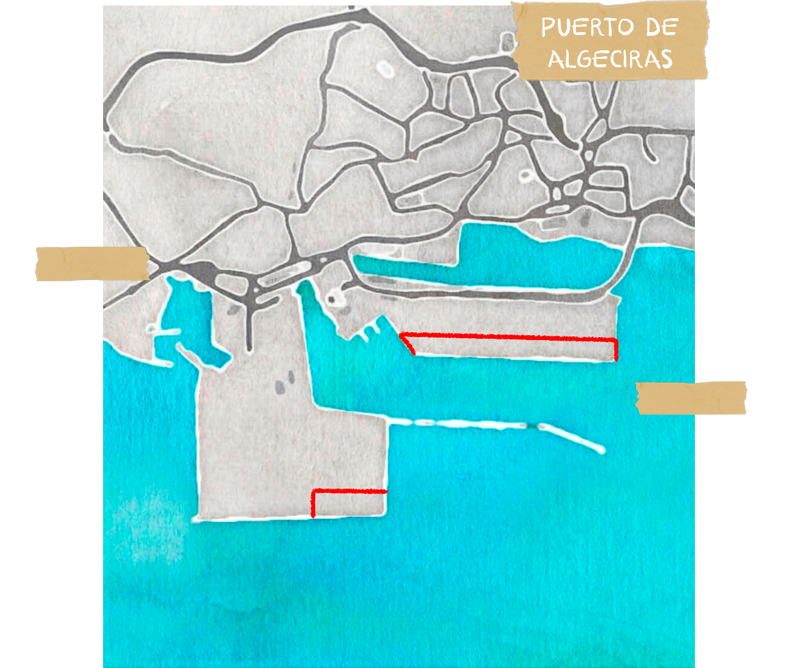
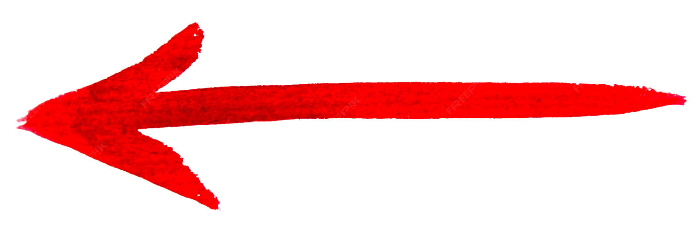
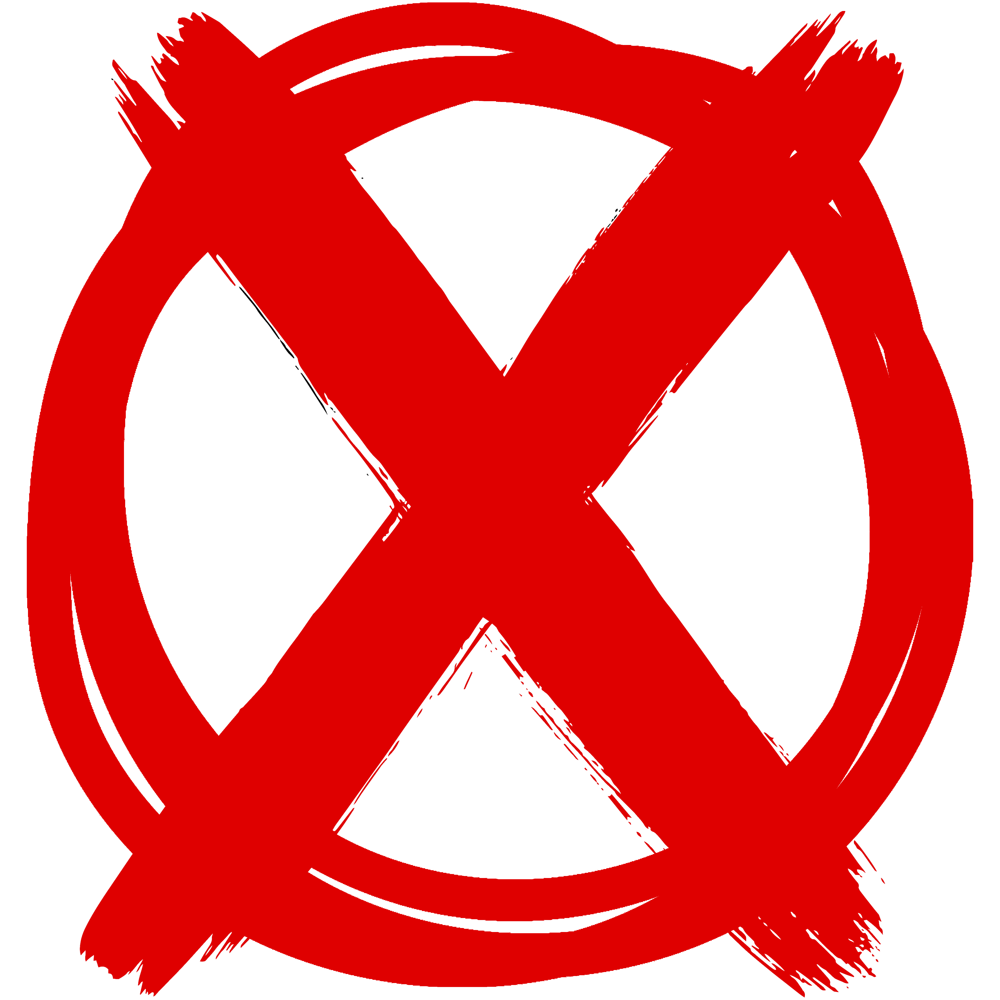
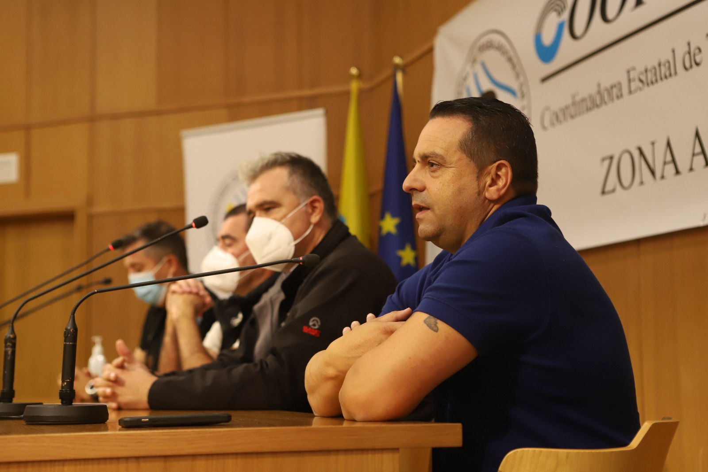
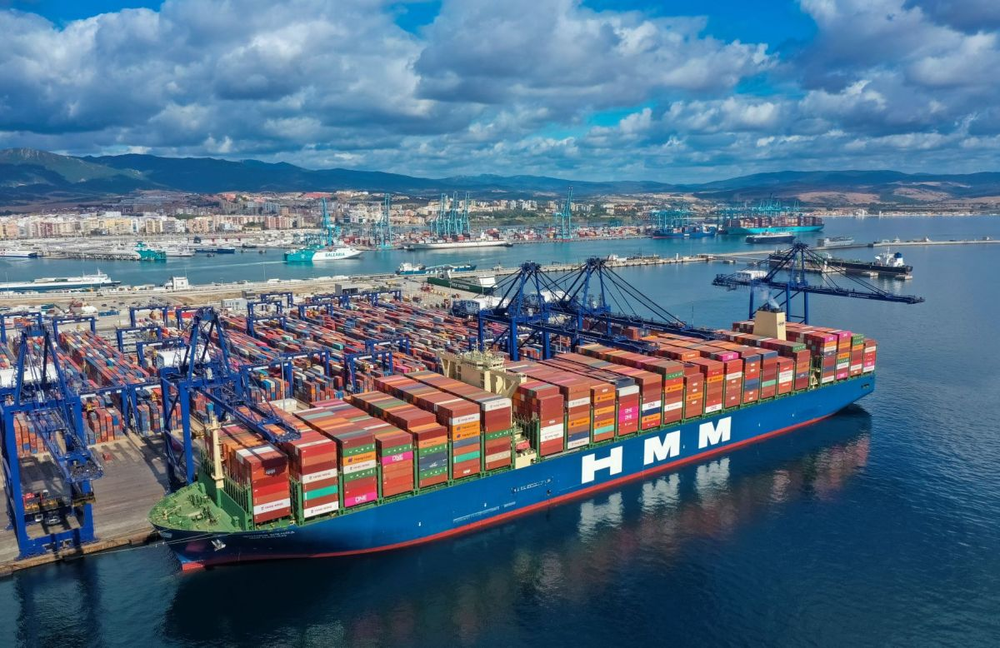

INTRODUCCIÓN
El puerto de Algeciras es el principal puerto de España y uno de los más importantes de Europa. En 2017, los trabajadores y las trabajadoras del puerto se enfrentaron a un intento de reforma laboral que amenazaba la estabilidad de sus empleos. Gracias a la lucha sindical, lograron proteger sus derechos y mantener la calidad del empleo en el sector.




2024 | Te sientes trabajador/a del puerto, no de tu empresaen su rechazo a los despidos en la Agencia Marítima Partida Logistics
la aplicación del Tratado de emisiones de la UE
la aplicación del Tratado de emisiones de la UE
de puertos del estado
de puertos del estado
de puertos del estado
Reclamación sindical por la unificación de convenios en el sector del practicaje
El practicaje es una actividad fundamental en el transporte marítimo. Consiste en el asesoramiento a los/as capitanes/as de buque a su entrada y salida de los puertos. La Corporación de Prácticos del Puerto Bahía de Algeciras gestiona dicha actividad en la que se emplean, además de a personas que ejercen el practicaje portuario, a aquellas que desarrollan diferentes operaciones. Existe, por un lado, un convenio que regula las condiciones del personal de radio-operación, y, por otro lado, un segundo convenio que regula las condiciones de los "boteros" -personal de marinería-. La principal reclamación sindical en esta actividad portuaria es la unificación de ambos sectores en un mismo convenio. Evitar divisiones es fundamental para articular una respuesta sindical en cualquier ámbito.
'Te sientes trabajador/a del puerto, no de tu empresa'
Coordinadora optó por expandirse más allá de la estiba, a todos los trabajos del puerto, como parte de una estrategia del sindicato para hacer frente a los desafíos que impone la globalización neoliberal -liberalización del sector, competencia internacional entre puertos-. En un tiempo récord, Coordinadora ha logrado convertirse en un sindicato hegemónico en los puertos del Estado español, con una estrategia que pasa por la construcción de una narrativa que enfatiza la identidad portuaria de los trabajadores.

Lucha contra la deslocalización en APM Terminals

APM Terminals Algeciras, perteneciente al grupo naviero danés A.P. Møller-Mærsk, es la mayor compañía de gestión de contenedores a nivel mundial. APMT gestiona una de las dos terminales de contenedores del Puerto Bahía de Algeciras. En 2021, el Comité de Empresa, liderado por aquel entonces por CCOO, convocó varios paros durante la negociación del convenio, que había vencido en 2020. Más allá de las actualizaciones salariales, los representantes de los trabajadores y las trabajadoras perseguían el compromiso de mantener los puestos de trabajo. La negociación se daba en un proceso de reestructuración del tráfico marítimo global. En concreto, APMT estaba deslocalizando parte de las actividades de Algeciras a otros lugares, sobre todo a Tánger. Allí la multinacional estaba potenciando el desarrollo de la terminal de contenedores automática Tánger-Med 2, que constituye una competencia directa para las terminales de Algeciras. Tras varias jornadas de lucha y sesiones maratonianas de negociación, lograron compromisos para frenar, momentáneamente, el proceso de deslocalización.
Huelga en la estiba contra la aplicación del Tratado de emisiones de la UE
Las medidas para descarbonizar la Unión Europea han generado inquietud entre las personas trabajadoras portuarias. Se teme que la aprobación del Régimen de Comercio de Emisión de la UE implique el desvío del tráfico marítimo y escalas a los puertos del Sur del Mediterráneo, mermando el volumen de tráfico en los puertos europeos. La European Dockworkers Council, a la que pertenece Coordinadora Estatal de Trabajadores del Mar, convocó un paro de 2 horas el 3 de abril de 2024 como medida de presión para que sus alegaciones fueran tenidas en cuenta y se activaran estructuras de diálogo social. Al mismo tiempo que un centenar de estibadores y estibadoras se concentraban ante el Parlamento Europeo en Bruselas, en el Puerto Bahía de Algeciras, se llevaba a cabo la huelga y una concentración.

Lucha por el convenio y la sobrecarga de trabajo en el Puesto de Control Fronterizo

En el Puesto de Control Fronterizo del Puerto Bahía de Algeciras, instalado en el muelle Juan Carlos I, se inspeccionan todas las mercancías que pasan por el puerto. Este servicio se encuentra externalizado por la Autoridad Portuaria Bahía de Algeciras a la empresa Docks Logistics Spain. Esta empresa, que opera los PCF de varios puertos de España, cuenta con un convenio de empresa de ámbito estatal, firmado por CCOO y UGT. En Algeciras, el sindicato Coordinadora inició acciones en 2019 para mejorar algunas de las condiciones laborales. En febrero de 2019, se alcanzó un acuerdo previo a la huelga con la mediación del Servicio Extrajudicial de Resolución de Conflictos Laborales de Andalucía, por el cual el personal mejoraría las condiciones respecto al convenio de empresa. En concreto, lograron un plus de disponibilidad; incrementar la retribución de las horas extraordinarias; la integración en plantilla del personal más veterano que prestaba funciones a través de Empresas de Trabajo Temporal; un acuerdo en materia de horarios y nocturnidad; e igualar las condiciones salariales para el personal cuyo salario global estuviera por debajo del convenio provincial/sectorial de APEMAR (agencias marítimas).
'El amarre era la gaviota del puerto' Puesta en valor y negociación colectiva en el sector del amarre

El amarre y desamarre de buques en el Puerto Bahía de Algeciras es una actividad de alto riesgo regulada por convenios sectoriales y empresariales. El convenio portuario de 2016, firmado por CCOO, UGT y SAME, estableció una bolsa de trabajo para "amarradores expertos", garantizando estabilidad laboral y cualificación. En 2018, la Comisión Nacional de los Mercados y la Competencia cuestionó el acuerdo por posibles restricciones a la competencia. Posteriormente, se firmaron acuerdos de mediación para estabilizar empleos ante la liberalización del sector y ajustar salarios según el IPC, impulsados principalmente por CCOO. Para 2024, SAME ya no participa en el sector, quedando CCOO y UGT como firmantes del acuerdo salarial. Mientras, el sindicato CTPA prioriza convenios empresariales, como en Marítima Algecireña S.A., y tiene presencia en otras empresas del sector.
'Todos en el mismo bote' La fuerza de la unidad en el sector del remolque
El servicio de remolque consiste en la ayuda a los movimientos de un buque siguiendo indicaciones de los capitanes y las capitanas de buque a través de la fuerza motriz de otro buque remolcador dentro de las aguas del espacio portuario. En el Puerto Bahía de Algeciras este servicio está encomendado a la empresa Boluda Corporación Marítima. El convenio colectivo fue firmado en 2015 para las empresas - Cía. Ibérica de Remolcadores del Estrecho, S.A. CIRESA - Servicios Auxiliares de Puertos, S.A. SERTOSA - Servicios Marítimos de Algeciras, S.A. SERMAR, las tres pertenecientes al grupo Boluda. El sindicato con la representación de estas personas trabajadoras es CGT-SAME. El Sindicato de Actividades Marítimas, un sindicato exclusivamente portuario, se integró dentro de CGT en el año 2017. Desde el punto de vista sindical, la lucha en la negociación de los convenios se centró en unificar bajo un mismo acuerdo a las tres empresas que prestaban el servicio, además de cuestiones de jornada, vacaciones y salario.

Del bloqueo a la aprobación del convenio: subidas salariales del 20% para el personal
La vigencia del Convenio Colectivo terminó el 31 de diciembre de 2021, pero hasta mediados de octubre de 2022 no comenzaron las negociaciones del Convenio Colectivo del personal de tierra de FRS Iberia y de Ferris Rápidos del Sur. El servicio se vio muy afectado por la pandemia y el cierre de la frontera con Marruecos. CC OO fue crucial en esas negociaciones y bajo su asesoramiento, el comité de empresa de FRS y las delegadas de Ferris plantearon su demanda principal: un aumento salarial. Finalmente, al borde de terminar el año, se llega a un acuerdo con un aumento salarial del 20%, que afecta a unas 200 personas que conforman la plantilla de tierra del enlace marítimo Ceuta-Tánger.

Culminación de las negociaciones del Convenio Agencias Marítimas Consignatarias de Buques S. A. APEMAR
El Convenio Colectivo Agencias Marítimas de Cádiz, más conocido como el convenio de Apemar, afecta a miles de personas trabajadoras, puesto que aglutina a más de un centenar de empresas consignatarias, transitarias, agentes de aduanas y estibadoras que desarrollan su actividad en el Puerto de la Bahía de Algeciras y en el de Cádiz. Tras una intensa negociación, se publicó en mayo de 2022 con vigencia de tres años 2021-23 y consolidó mejoras salariales y de las condiciones laborales. En 2024 se firma un nuevo convenio en una mesa de negociación en la que CTPA contaba con casi un 90% de representatividad, lográndose la mayor parte de reclamaciones de los trabajadores.
'El salario es un derecho, no un privilegio' Las y los trabajadores de Intershipping exigen el pago de sus salarios pendientes

La naviera Intershipping, encargada de las líneas que unen Algeciras-Tánger y Tarifa-Tánger, desapareció e incurrió en impagos de salarios durante varios meses, que dejaron a más de 50 familias en una situación de extrema precariedad, a finales de 2023. Las y los trabajadores se concentraron en demanda del pago de sus salarios y en protesta por la escasez de comunicación por parte de la empresa. Tras la solicitud a Inspección de Trabajo se constató un cierre de patronal encubierto, se procedió a una demanda por despido improcedente que fue reconocida.
Unión de las personas trabajadoras portuarias en su rechazo a los despidos en la Agencia Marítima Partida Logistics
En junio de 2023, el sindicato Coordinadora de Trabajadores de los Puertos Andaluces CTPA organizó una protesta frente al despido de nueve trabajadores de la empresa Agencia Marítima Partida Logistics, en el Puerto de Algeciras. Para el sindicato, los despidos eran improcedentes, puesto que es habitual que baje la productividad en los meses de verano, así como en otros momentos del año se pide a los trabajadores 'un esfuerzo muy grande'. La concentración promovida por CTPA en protesta por los despidos visibilizó la unión de trabajadores de muy diversos oficios dentro del puerto y consiguió la atenuación del conflicto posterior con la introducción de la figura de fijo discontinuo y la reducción de la estacionalidad.

Sobre los gestos de solidaridad más allá del puerto

Coordinadora TPA tuvo un gesto, en mayo de 2024, que recupera la tradición solidaria del sindicalismo histórico, cuando hizo un aporte a la caja de resistencia de los trabajadores y las trabajadoras de Acerinox en solidaridad con su proceso de huelga.
'Presentan sus pliegos y luego no hay dinero para los convenios' Las reivindicaciones
Según las personas trabajadoras, OHL da el servicio desde 2020 pero mantiene congeladas las conversaciones sobre el convenio colectivo. Coordinadora TPA es mayoritaria en la representación de la plantilla, que a finales de 2021 decretaron la huelga para exigir a la empresa OHL, concesionaria de los servicios de limpieza en el PBA, que avancen las negociaciones por un nuevo convenio colectivo que garanticen mejoras salariales, en un momento de gran preocupación por la pérdida de poder adquisitivo que supuso la inflación. En 2022 se consigue un comité de empresa con 5 personas delegadas lo que posibilitó reuniones de negociación con la autoridad portuaria de cara a la concesión de la nueva contrata. En 2025, tras las negociaciones, entra como nueva empresa Eulen.

Incompetencia. Despropósito de las autoridades de puertos del estado

En 2017, el Gobierno intentó reformar el sistema portuario mediante un Real Decreto que debilitaba la estabilidad laboral y el poder sindical en la estiba, tras una sentencia de la UE. Las personas trabajadoras, lideradas por Coordinadora TPA, respondieron con huelgas y movilizaciones en junio. Pese a la oposición mediática conservadora lograron un acuerdo que protegió la calidad del empleo y la cualificación del sector. Gracias al acuerdo de este conflicto, en 2020 se dio un paso al frente tanto por parte de la estiba como de los trabajadores y las trabajadoras ya que mientras estaba paralizado el país por el Covid, el puerto no se detuvo. Esto fue en 2017 y gracias a este al bueno, gracias al conflicto y al diálogo que hubo con el Estado y demás, en el 2020 dieron un paso al frente, tanto la estiba como todos los trabajadores, porque todo el mundo estaba paralizado a nivel nacional, como bien sabéis y nosotros no paramos de trabajar. Nosotros, los trabajadores aquí del puerto fuimos los primeros conejillos de India en vacunarnos. O sea, que tuvimos prioridad en vacunarnos.